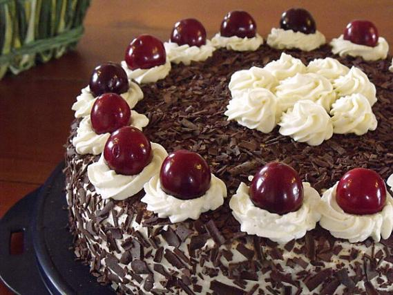
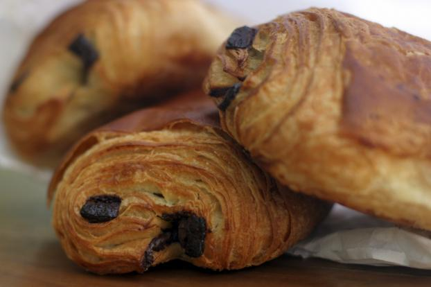
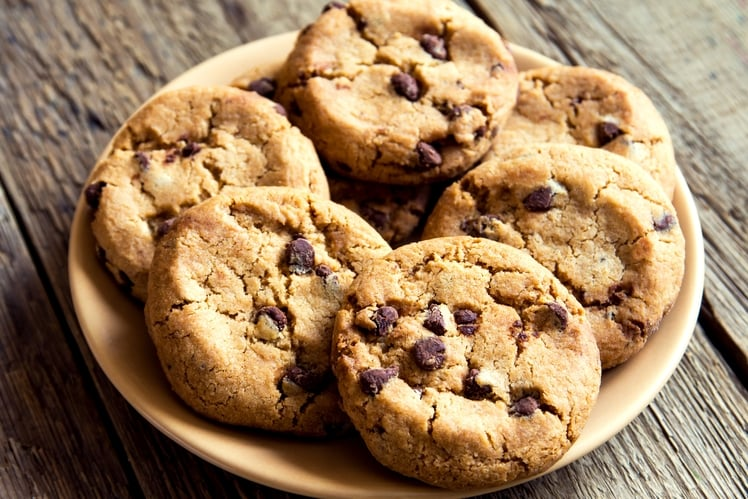
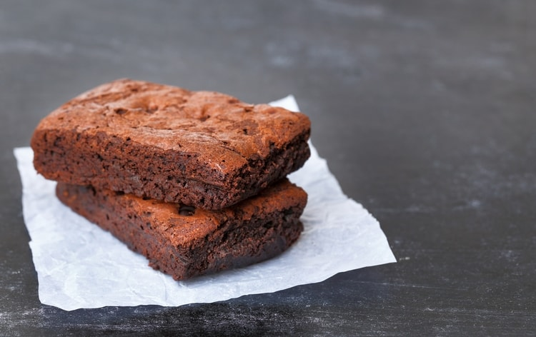

Chocolate is an essential ingredient of many pastries, this page is dedicated to showing various
Forêt noire

Ingredients
-
6 eggs (white and yellow separated)
- 150g of sugar
- 55g of doe
- 55g de maïzena
- 3 c a s of coco powder
- 1 packet of vanilla sugar
- 65 cl of real cold cream
- 1 bocal of cherries
- 75g of icing
- Chucks of chocolate
Preparation
Preheat the oven to 150 ° C.
In a bowl, beat the egg yolks, caster sugar and vanilla sugar until the mixture is a ribbon. While continuing to beat, gradually add the flour, the maize and the cocoa powder.
In another bowl, whip up the egg whites very tightly with an electric mixer and gradually add them to the dough.
Pour into a buttered pan (silicone for me), put and oven and cook for about 40 minutes.
At the end of the oven, leave the biscuit 5 to 10 minutes in its mold then unmold and let cool on a grid.
In a large bowl, beat the cream. When the cream begins to firm, gently pour the icing sugar.
Pour the cherry juice into a bowl and let the cherries drain.
When the cake is cold, cut in 2 and wet the inner parts of the biscuit with the juice of the cherries.
Lay the bottom of the cake on a serving platter and spread a small portion of the whipped cream, arrange the cherries and then put a little whipped cream.
Place the top of the cake on top and spread the remaining whipped cream on the sides and surface of the cake.
Mousse au chocolat

Ingredients
- 3 eggs
-
100 g of chocolate (black or milk))
-
1 sachet of vanilla sugar
Separate the whites from the yolks.
Soften the chocolate in a saucepan in a bain-marie.
Off the heat, stir in the yolks and sugar.
Beat the whites in firm snow
and add them gently to the mixture using a spatula.
Pour into a terrine or verrines
and put in the fridge for 1 hour or 2 minutes.
Chocolatine / Pain au chocolat

ingredients
- 500g of flour
- 220g of ointment butter
- Chocolate bars
- 40g of caster sugar
- 1 egg for gilding
- 28 cl of warm milk
- 10g of fresh or dry baker's yeast
- 2 tablespoons fine salt
In the bowl of your robot, place the flour, sugar, salt, yeast and milk. Knead gently, with the hook. As soon as the dough begins to form a ball, stop kneading and finish by hand, to form a ball.
Shoot the dough and put it in the fridge all night (or at least 2h for people in a hurry).
Once the dough rested, flour the work plan and spread the dough with a rolling pin.
Once your dough is spread, place the butter of the same consistency as the dough in the center of it.
Fold the dough in the wallet on all 4 sides, being careful that the butter stays in the center. He must be trapped in the dough.
Once folded, the dough must form a rectangle.
Flatten in length so that the butter fits into the dough.
Then fold the dough into the wallet again.
Then film the dough and put it in the fridge about fifteen minutes minimum.
Flour the work surface again, and spread the dough again in its length.
Fold back into the wallet (in three).
Shoot again and place in the fridge for a minimum of 20 minutes.
Flour the work surface again, and spread the dough again in its length.
Fold again in three, in wallet and flatten with the roller to weld the layers.
Shoot again and place in the fridge at least 1 hour.
Once rested, spread the dough about 3 to 4 mm thick.
Cut strips of dough the size of chocolate strips (in length).
Then place 2 chocolate bars on each end of the dough and roll the dough like a roll.
Place the chocolate buns on a baking sheet, film them and let them grow (inflate) in the hottest part of the house.
Meanwhile, preheat your oven to 180 ° C.
Once the chocolate loaves have doubled in volume, brown them with a beaten egg.
Once the chocolate loaves have doubled in volume, brown them with a beaten whole egg.
Bake for 15 to 20 minutes. They must be golden brown.
fondant au chocolat

ingredients
- g of chocolate to cook
- 100 g of sweet butter
- g of caster sugar
- 5 eggs
- 4 tablespoons flour
Preheat oven to 180 ° C (thermostat 6).
Melt the chocolate and butter in a bain-marie over low heat, or in the microwave on the "defrosting" program.
Meanwhile, separate the yolks from the egg whites.
Beat the whites until stiff. Book now.
When the chocolate-butter mixture is melted, add the egg yolks and whip.
Stir in the sugar and flour, then add the egg whites without breaking them.
Butter and flour a pan and pour in the cake batter.
Bake for 20 minutes.
When the cake is cooked, allow it to cool before unmolding.
Cookie

Ingredients
- 1 egg
- 85 g sugar
- 85 g of sweet butter
- 150 g flour
- 100 g chocolate chips
- 1 sachet of vanilla sugar (optional)
- 1 teaspoon baking powder
- 1/2 teaspoon salt
Let the butter soften to room temperature. In a bowl, knead it with the sugar.
Add the egg and possibly the vanilla sugar.
Gradually add flour, baking powder, salt and chocolate chips. Mix well.
Butter a baking sheet or cover with a silicone sheet. Using two tablespoons or simply with your hands, form some pieces of dough spacing them apart as they will spread during cooking.
Bake 8 to 10 minutes at 180 ° C or thermostat 6. Take them out as soon as the contours start to brown.
Brownie

Ingrediants
- 250 g of dark chocolate
- 150 g of sugar
- 150 g Butter
- 1 bag of vanilla sugar
- 60 g sifted flour
- 3 Eggs
- 1 pinch of salt
Melt the butter in a small saucepan over a very low heat and then break the dark chocolate in a salad bowl. Let it melt gently in a bain-marie.
Dip a brush into the melted butter and brush your mussel with a crack. Preheat the thermostat oven 6 (180 °).
Mix the melted chocolate with the butter. Out of the heat, add the caster sugar, the vanilla sugar and the beaten egg omelette with a small pinch of salt. Finally add the flour.
Pour into the mold and bake for 15 minutes. Let stand 5 minutes in the oven off.
Let cool about 1/2 hour, then put in the refrigerator for at least 2 hours. Unmold the cake and cut it into individual pieces.
Space cake au chocolat
NO COMMENT

Ingredients
- 50 grams of flour
- 100 grams of butter (50g of ordinary butter and 50g of cannabis butter)
- 3 eggs
- 200 grams of chocolate
- 100 grams of sugar
- a teaspoon of yeast
Preheat your oven to 180 ° C.
Melt the chocolate and butter in a saucepan over very low heat (it only needs to burn at the risk of losing the THC present in the butter)
In a salad bowl, add the sugar, the eggs, the flour. Mix and add the chocolate butter mixture. Mix well
Butter and flour your dish and pour the cake batter.
Cook for about 20-25 minutes. At the end of the oven, the cake may not look cooked enough, it's normal, let cool and then unmold it.
Marbré

Ingredients
- 75 g of soft butter
- 200 g sugar
- 20 cl of milk
- 250 g flour
- 3 eggs
- 1 sachet of yeast
- 100 g milk chocolate
Preheat oven to 180 ° C (thermostat 6).
Mix the soft (and unmelted) butter with the sugar.
Separate the yolk from the white of your eggs and put the whites in the refrigerator.
Add the egg yolks, the flour, the yeast and 15 cl of milk to the butter-sugar mixture. Mix well.
Allow time to whiten the egg whites.
Stir the egg whites into the mixture.
Melt the chocolate bar (broken into small squares) with 5 cl of milk in the microwave.
Separate the pasta in 2: 1/3 - 2/3.
In the bowl with 1/3 of the dough, add the chocolate.
Pour the 2 pasta in a rectangular buttered mold, alternating: nature and chocolate.
Try to finish with a layer of plain dough. Bake 40 minutes.
Take the cake out of the oven, unmold it and allow it to cool.